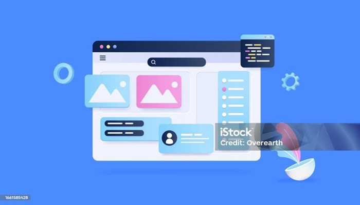

Hello, I am Jyoti
Creative Front-end Web Developer and Web Designer

Creative Front-end Web Developer and Web Designer

I am a passionate and detail-oriented Web Designer dedicated to crafting modern, responsive, and user-centric digital experiences. I specialize in transforming ideas into visually compelling and highly functional websites that not only look great but also deliver seamless usability across all devices. With a strong eye for design and a deep understanding of user behavior, I focus on creating clean, intuitive interfaces that enhance user engagement and drive results. I continuously explore new design trends and technologies to stay ahead in the ever-evolving digital landscape. I believe that great design is not just about aesthetics—it’s about solving problems, telling stories, and creating meaningful connections between brands and users.
I specialize in designing and developing responsive, high-performance websites using HTML, CSS, and JavaScript, along with modern UI/UX design techniques. I focus on building seamless, accessible, and visually engaging interfaces that provide an exceptional user experience across all devices. With a keen understanding of performance optimization and web accessibility standards, I ensure that every project is fast, inclusive, and user-friendly. I pay close attention to layout structure, typography, and visual hierarchy to create designs that are both functional and aesthetically appealing. I am also experienced in working with tools and workflows that enhance productivity and design consistency, including version control systems and modern development practices. I am continuously learning and adapting to new technologies.


I believe in the power of clean, minimal design combined with seamless user experiences and meticulous attention to detail. Every element I create is thoughtfully crafted to ensure clarity, usability, and visual harmony. My goal is to build websites that not only look visually stunning but also deliver outstanding performance, speed, and accessibility. I strive to create digital experiences that are intuitive, engaging, and meaningful for users. I approach each project with a problem-solving mindset, ensuring that design decisions are purposeful and aligned with user needs and business goals. For me, great design is where aesthetics meet functionality to create lasting impact.
I have worked on a diverse range of projects, including portfolio websites, landing pages, and real-world client-based designs during my internship. Each project has helped me strengthen my ability to create responsive, user-focused, and visually engaging web experiences. Through hands-on experience, I have developed a strong understanding of translating client requirements into functional and aesthetically appealing designs. I focus on delivering projects that are not only visually impressive but also optimized for performance and usability. Every project I take on reflects my commitment to quality, creativity, and continuous improvement, allowing me to grow as a designer while delivering meaningful digital solutions.


I am continuously exploring new design trends and refining my skills to stay aligned with modern web technologies. I actively invest time in learning emerging tools, frameworks, and best practices to keep my work fresh, relevant, and future-ready. I believe in constant growth and adaptability, which drives me to experiment, practice, and evolve with the ever-changing digital landscape. By staying curious and proactive, I ensure that my designs remain innovative, efficient, and user-focused.
Let’s work together to bring your ideas to life and create impactful digital experiences. Whether you have a project in mind, a collaboration opportunity, or just want to connect, I’d love to hear from you. I am always open to discussing new ideas, creative challenges, and exciting opportunities. Feel free to reach out, and let’s build something meaningful together.

Energetic and detail-oriented learner transitioning into the field of web development. With a strong academic background in science and communication, I enjoy building clean, functional, and user user-friendly web interfaces. Passionate about learning new technologies and creating real-world solutions through code.